Mobilya ustaları için
DC Mobilya Üretim
Duvar ölçüsünden teklife, malzeme listesinden fason kesim listesine kadar tek uygulama.
Telefon · Tablet · Bilgisayar
İnternetsiz çalışır
Bu sunum, DC Mobilya Üretim uygulamasını baştan sona tanıtır: ustanın müşteride ölçü alıp teklif vermesinden, sipariş sonrası malzeme ve fason kesim listesine kadar. Ekran görüntüleri uygulamanın gerçek çıktılarıdır; fiyatlar örnek fiyat listesiyle hesaplanmıştır.
Bugün atölyede
Ölçüden kesime kadar her adım elle yapılıyor
1
Teklif günler sürüyor
Ölçü müşteride alınır, hesap atölyede kâğıtta yapılır. Müşteri fiyatı birkaç gün sonra öğrenir; o arada başka ustaya gider.
2
Kesim listesi hataya açık
Yan dikme alt tablaya basıyor mu, tabla kalınlığı düşüldü mü, kapak boşluğu verildi mi? Tek yanlış ölçü bir plakayı fireye çevirir.
3
Malzeme eksik kalıyor
Kaç menteşe, kaç ray, kaç paket vida? Bir kalem unutulunca montaj durur, hırdavatçıya ikinci kez gidilir.
DC Mobilya Üretim · Sorun
Uygulamanın çıkış noktası: usta müşteride ölçü alıyor ama fiyatı, malzemeyi ve kesim listesini atölyeye dönünce elle hesaplıyor. Bu hem zaman kaybettiriyor hem de hata payı bırakıyor.
Çözüm
Beş adım, tek uygulama, müşterinin yanında
1
Ölç
Duvar ölçüsü, tavan yüksekliği, kolon ve pencere boşlukları girilir.
2
Tasarla
Modüller dizilir, ölçüye göre esner, 3D olarak müşteriye gösterilir.
3
Teklif ver
Malzeme seçilince fiyat anında çıkar; çıktı alınır ya da WhatsApp ile gider.
4
Sipariş al
Müşteri onaylayınca iş siparişe döner, kapora kaydedilir.
5
Üret
Malzeme listesi ve fason kesim listesi Excel olarak hazır.
DC Mobilya Üretim · Çözüm
Uygulamadaki her iş bu beş adımı izler. Proje ekranındaki sekmeler de aynı sırada: Ölçü ve Tasarım, Malzeme Seçimi, Teklif, Malzeme Listesi, Kesim Listesi.
Her yerde çalışır
Atölyede, dükkânda, müşterinin mutfağında
Telefona uygulama gibi yüklenir (PWA): Android, iPhone, tablet, bilgisayar.İnternet gerekmez. Bodrum katta, şantiyede de açılır.Veriler cihazda saklanır; sunucu ya da aylık ücret yok.Yedek dosyası (JSON) ile telefondan bilgisayara taşınır.Telefonda alt menü, bilgisayarda üst menü; düğmeler parmakla basılacak boyutta.
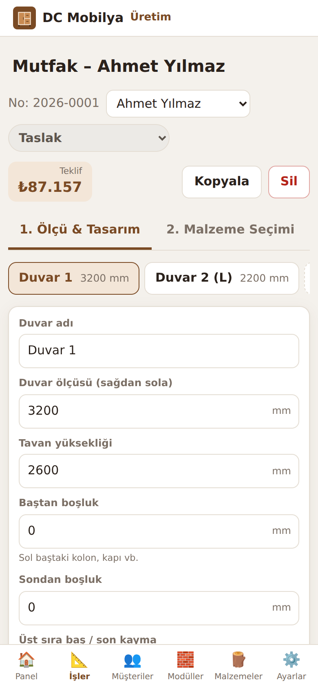
DC Mobilya Üretim · Kullanım ortamı
Sağdaki görüntü uygulamanın telefon boyutundaki halidir. Tarayıcıdan bir kez açılıp "Ana ekrana ekle" denildiğinde uygulama gibi çalışır ve internetsiz açılır. Veriler tarayıcının cihaz içi veritabanında (IndexedDB) tutulur; bu yüzden düzenli yedek almak önemlidir.
Ölçüden tasarıma · Yeni iş
İş türünü seç, ölçüyü yaz, modüller kendiliğinden dizilsin
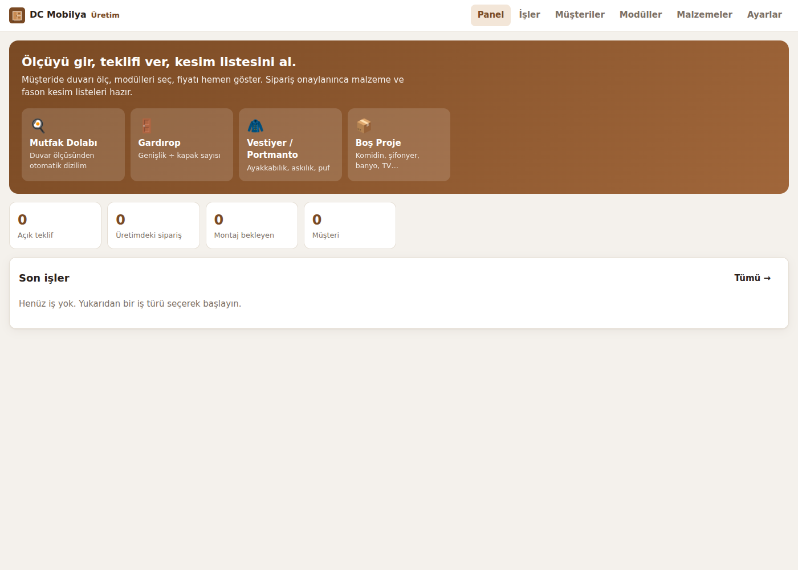
Mutfak: duvar ölçüsü ve istenirse L köşenin ikinci duvarı. Evye, bulaşık, çekmeceli, fırın ve kapaklı modüller otomatik yerleşir.
Gardırop: toplam genişlik, kapak sayısı, 2'li ya da tek kapaklı düzen, isteğe bağlı yüklük.
Vestiyer: ayakkabılık, puf oturaklı askılık ve kapaklı modüller.
Diğer: komidin, şifonyer, banyo, TV ünitesi.
DC Mobilya Üretim · Yeni iş
Yeni iş penceresinde müşteri adı ve telefonu da girilir; müşteri kaydı otomatik açılır. "Modülleri otomatik yerleştir" işaretliyse dizilim hazır gelir, sonra her şey değiştirilebilir. İş numarası yıl-sıra şeklinde otomatik verilir (2026-0001 gibi).
Akıllı sığdırma
Modüller duvara göre esner, sabitler ölçüsünü korur
Esnek modül boşluğu, nominal genişliği oranında paylaşır; min/maks sınırına gelince durur, kalan pay diğerlerine geçer.
Sabit modül (fırın, bulaşık, köşe) ve elle ölçü girilip 🔒 kilitlenen modül ölçüsünü korur.
Boşluk kalırsa tek dokunuşla dolgu paneli eklenir; taşma olursa uyarı çıkar.
Örnek: üst sıra, 3200 mm duvar
Modül Nominal Sınır Sonuç Bulaşıklıklı üst 900 600–900 900 Çift kapaklı üst 600 600–1200 775 Çift kapaklı üst 600 600–1200 775 Üst köşe (kör) 750 sabit 750 Toplam 2850 3200
Bulaşıklık 900'de sınıra dayandı; kalan 350 mm iki çift kapaklıya eşit dağıldı.
DC Mobilya Üretim · Akıllı sığdırma
Sığdırma 1 mm'ye yuvarlanır, yuvarlama farkı son esnek modüle verilir; toplam her zaman duvar ölçüsüne eşittir. Boy dolaplar (kiler, buzdolabı, ankastre boy) üst sırayı böler: üst dolaplar her bölümde ayrı ayrı sığdırılır. Duvarın başında ve sonunda kolon, kapı gibi boşluklar ayrıca girilebilir; üst sıranın başlangıcı alt sıradan farklıysa kayma değeri verilir.
Gardırop sihirbazı
2600 mm, 6 kapak: genişlik kapaklara eşit bölünür
2 kapaklı düzen
3 × 867
Üç adet 2 kapaklı modül (866 + 866 + 868 mm). Kapak genişliği 430 mm. İç düzen çeşitlenir: iç çekmeceli, bölmeli, askılı.
Tek kapaklı düzen
6 × 433
Altı adet tek kapaklı modül; askılı ve raflı sırayla gelir. Tek sayıda kapakta 2'li düzen bir tek kapaklı modül ekler.
Tavan kontrolü: 2600 mm tavanda gövde en fazla 2520 mm yapılır. Böylece dolap yatık getirilip yerinde dikilebilir. İstenirse üstte ayrı yüklük modülleri eklenir.
DC Mobilya Üretim · Gardırop
Sihirbaz, önerilen kapak sayısını da gösterir: her kapak ayarlardaki azami genişliği (600 mm) geçmesin diye. Yuvarlama farkı son modüle verilir, toplam genişlik korunur. Köşe gardırop, sürgülü 2 ve 3 kapaklı gardırop, aynalı kapaklı modüller kütüphaneden ayrıca eklenebilir.
3D tasarım
Müşteri mutfağını kesimden önce görür
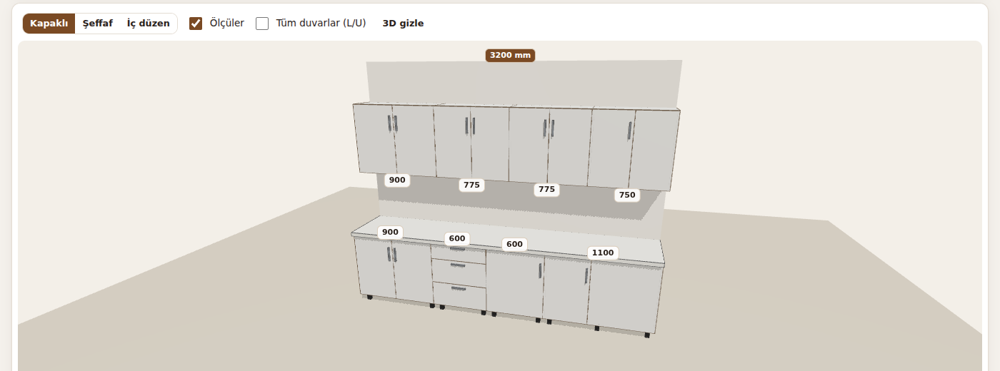
Kapaklı / Şeffaf / İç düzen görünümleri
Ölçü etiketleri her modülün üstünde
L / U birleşik tüm duvarlar
Dokun, seç, düzenle doğrudan 3D'den
DC Mobilya Üretim · 3D tasarım
3D görünüm kesim listesiyle aynı hesaptan üretilir: her parça gerçek ölçüsünde ve konumunda çizilir. Yani 3D'de görülen yan dikme, raf, kapak ve çekmece kutusu, kesim listesindeki parçaların ta kendisidir. Renkler seçilen malzemeden gelir (örneğin antrasit kapak, ceviz gövde). Parmakla döndürülür, yakınlaştırılır.
Modül şeritleri ve ayarları
Sürükle, bırak, dokun: her modül tek tek ayarlanır
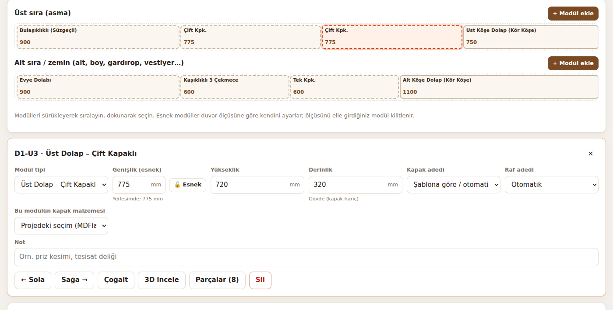
Modül tipi değişimi
Genişlik, yükseklik, derinlik; kilitle / esnet
Kapak, raf, çekmece adedi
Menteşe ya da köşe kapak tarafı
Modüle özel kapak malzemesi
Not: priz kesimi, tesisat deliği
Sola / sağa taşı, çoğalt, sil
3D incele, parça listesini gör
DC Mobilya Üretim · Şeritler
Şeritler duvarı ölçekli gösterir: kesik çizgili modüller esnek, düz çizgililer sabit ya da kilitli. Üst sıradaki taralı "Boy dolap" kutusu alt sıradaki kiler veya buzdolabının yerini tutar. Sürükleme telefonda da çalışır (dokun ve bekle). Üst sıra ve alt sıra için ayrı "Modül ekle" düğmeleri vardır; eklenen modül seçili modülün hemen sağına gelir.
Modül kütüphanesi
124
parametrik modül, ölçüye göre şekillenir
Her kartta ön görünüş çizimi ve ölçü aralığı var. Ölçü değiştikçe 3D önizleme, parça listesi ve donanım anında yenilenir.
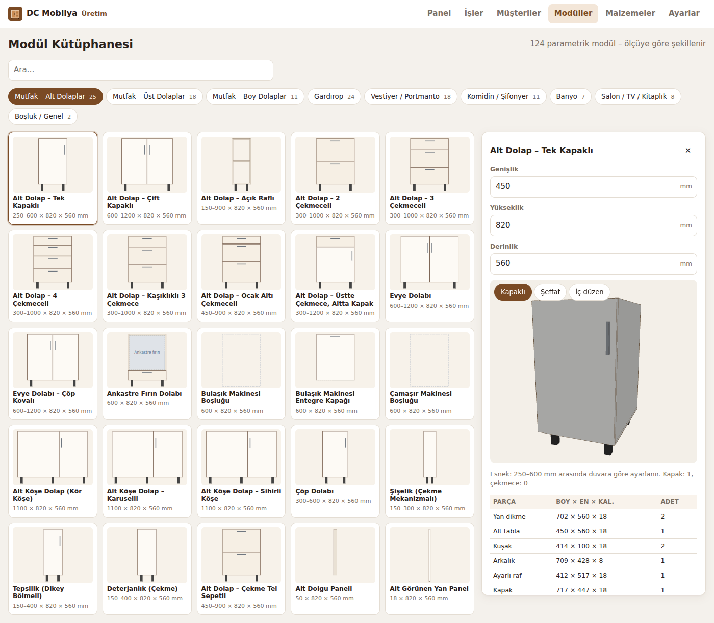
DC Mobilya Üretim · Modül kütüphanesi
Kütüphane arama destekler: "çekmece", "evye", "askı", "ayakkabılık", "köşe" gibi kelimelerle bulunur. Yeni modül eklemek teknik olarak tek satırdır: modül sütunlardan, sütun da alttan yukarı bölgelerden (raf, çekmece, iç çekmece, askı, ayakkabı, cihaz, oturak) oluşur; kapaklar bu bölgelerden otomatik üretilir.
Kütüphanede neler var
Mobilyacının yaptığı her şey, dokuz grupta
Grup Adet Örnekler Mutfak – alt 25 Tek/çift kapaklı, 2-3-4 çekmeceli, kaşıklıklı, evye, ankastre fırın, bulaşık boşluğu, kör köşe, karusel, çöp, şişelik Mutfak – üst 18 Camlı, kalkar, düşen, katlanır, dikey kalkar, aspiratör üstü, bulaşıklıklı, mikrodalga yerli Mutfak – boy 11 Kiler, çekme kiler ünitesi, fırın + mikrodalga, buzdolabı yeri, entegre buzdolabı Gardırop 24 1-2-3-4 kapaklı, iç/dış çekmeceli, pantolonluklu, aynalı, köşe, sürgülü 2-3 kapak, yüklük Vestiyer 18 Ayakkabılık, açık askılık, puf oturaklı, 4 kapaklı, gizli askılı, aynalı, klapa ayakkabılık Komidin / şifonyer 11 1-2-3 çekmeceli komidin, 3-4-5-6 çekmeceli şifonyer, makyaj konsolu Banyo · salon · genel 17 Lavabo altı, aynalı üst, TV ünitesi, kitaplık, vitrin, boşluk, dolgu, yan panel
DC Mobilya Üretim · Modül grupları
Toplam 124 modül: mutfak alt 25, üst 18, boy 11, gardırop 24 (yüklükler dahil), vestiyer 18, komidin ve şifonyer 11, banyo 7, salon 8, genel 2. Her grupta ayrıca dolgu paneli ve görünen yan panel modülleri var; boşluk modülleri pencere, kolon, kapı ve cihaz yerleri için kullanılır.
Malzeme ve fiyat kütüphanesi
563 kalem malzeme, kodu ve fiyatıyla hazır
DC Mobilya Üretim · Malzeme kütüphanesi · Fiyatlar örnektir, kendi fiyatlarınızla güncelleyin
Kütüphanede suntalam ve MDFlam dekorları; 3, 5 ve 8 mm arkalıklar; MDFlam, high gloss, akrilik, membran, balon, lake kapaklar; düz, yarım ve tam deve boynu menteşeler (normal ve frenli, 165 derece, cam kapak menteşesi); teleskopik, gizli ve metal kutu raylar; amortisörlü piston, düşen kapak makası, katlanır ve dikey kalkar mekanizmalar, sürgü rayları; 8-10-12-14-15 cm ayaklar; 3 mm'den 5 mm'ye vidalar, arkalık vidası, zımba teli; Gola profili, cam çerçeve profili; kaşıklık, çöp kovası, karusel, kiler ünitesi, askı borusu; laminat, çimstone, granit tezgahlar var. Fiyatlar KDV hariç, 2026 sonu için tahmini örnek değerlerdir.
Malzeme seçimi
Kapağı değiştir, fiyat anında yeniden hesaplansın
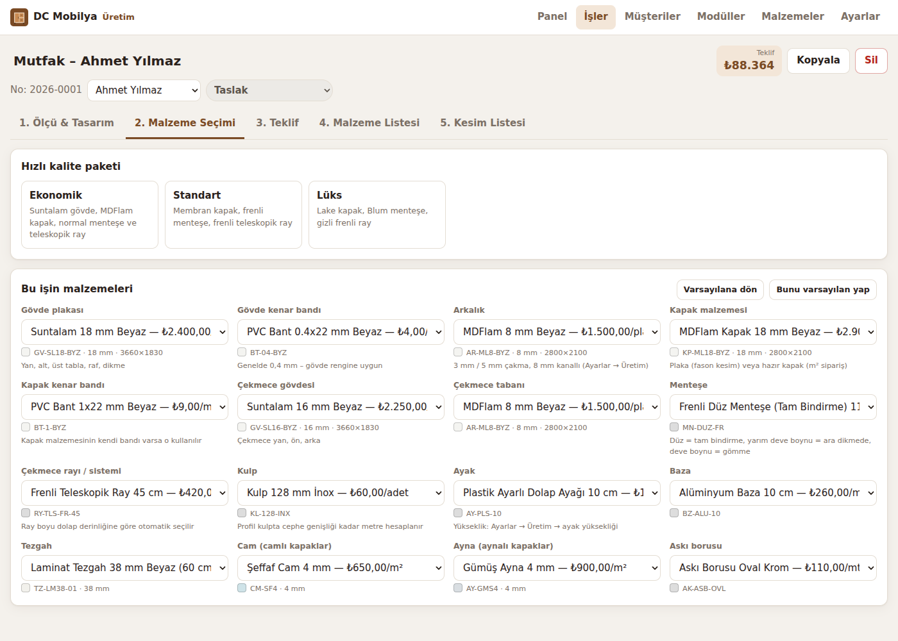
16 seçim: gövde, bant, arkalık, kapak, kapak bandı, çekmece gövdesi ve tabanı, menteşe, ray, kulp, ayak, baza, tezgah, cam, ayna, askı borusu.
Ekonomik: MDFlam kapak, normal menteşe, teleskopik ray
Standart: membran kapak, frenli menteşe ve ray
Lüks: lake kapak, Blum menteşe, gizli frenli ray
DC Mobilya Üretim · Malzeme seçimi
Kapak seçilince ona uygun bant otomatik gelir. Hazır kapaklar (membran, lake, akrilik) fason kesime girmez; m² üzerinden ayrı sipariş listesine düşer. Ray seçimi tiptir: boy dolap derinliğine göre otomatik seçilir (45 seçilse bile 560 derinlikte 50 cm ray kullanılır). "Bunu varsayılan yap" ile yeni işler bu seçimle başlar.
Teklif sekmesi
Maliyeti usta görür, müşteri sadece teklifi
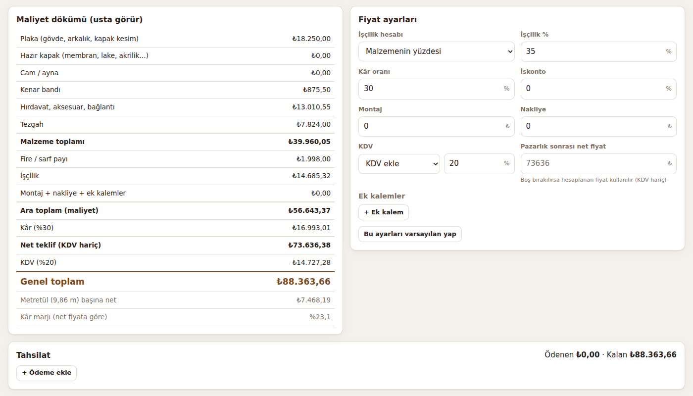
Kalem kalem maliyet dökümü
Kâr, iskonto, montaj, nakliye
Ek kalemler (LED, söküm…)
Pazarlık sonrası net fiyat
Kâr marjı ve metretül fiyatı
Kapora ve ödeme takibi, kalan tutar
DC Mobilya Üretim · Teklif sekmesi
Sol taraftaki maliyet dökümü yalnızca ekranda görünür, yazdırılan teklif formuna girmez. Fiyat ayarları "varsayılan yap" ile kaydedilince yeni işler aynı kâr ve işçilik oranlarıyla başlar. Tahsilat bölümünde tarih, tutar ve not (kapora, havale, nakit) ile ödemeler girilir.
Sipariş sonrası · Malzeme listesi
Hırdavatçıya tek seferde, eksiksiz liste
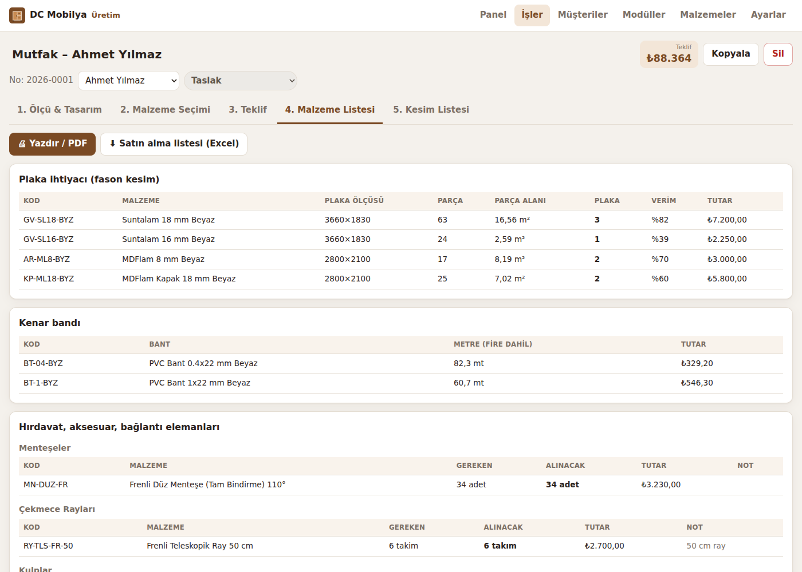
Plaka: optimizasyonla plaka adedi ve verim yüzdesi
Bant: renk ve kalınlığa göre metre, fire dahil
Hırdavat: gereken ve alınacak miktar; vida paket, ray takım
Hazır kapak ve cam: ölçü ölçü sipariş listesi, m²
Montaj föyü: D1-A3 gibi modül etiketleri
Excel: satın alma listesi, kapak ve cam siparişi
DC Mobilya Üretim · Malzeme listesi
Otomatik eklenen bağlantı elemanları: gövde birleşiminde her 150 mm'ye bir 4×50 vida, kuşaklarda 4×40, menteşe başına 4 adet 3,5×16, ray başına 12 vida, kulp başına 2 kulp vidası, ayarlı raf başına 4 raf pimi, üst dolaba 2 askı aparatı + dübel + vida, boy dolap ve gardıroba duvar sabitleme L parçası, modül birleştirme vidası, ayak başına 4 vida, baza ve baza klipsi, tezgah uç kapama, süpürgelik ve silikon, tutkal. Vidalar adet olarak sayılır, satın alma listesinde paket (1000'li, 500'lü) olarak çıkar.
Fason kesim listesi
Fasoncuya hazır liste: Excel ya da CSV
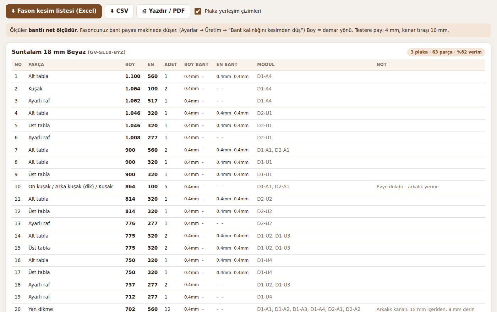
Her malzeme ayrı tablo ve Excel'de ayrı sayfa, üstte özet
Boy = damar yönü; 4 kenarın bandı ayrı sütunda
Aynı ölçüler birleşir, hangi modülden geldiği yazılır
CSV noktalı virgüllü, Türkçe Excel'de açılır
DC Mobilya Üretim · Kesim listesi
Sütunlar: No, Parça adı, Modül, Boy, En, Adet, Kalınlık, Damar, Boy bant 1, Boy bant 2, En bant 1, En bant 2, Malzeme kodu, Malzeme, Not. Ölçüler varsayılan olarak bantlı net ölçüdür; fasoncu bant payını makinede düşer. Ayarlardan "bant kalınlığını kesimden düş" açılırsa liste kesim ölçüsüyle verilir. Arkalık kanalı gibi işçilik notları "Not" sütununa yazılır.
Kesim kuralları · Örnek
450 mm tek kapaklı alt dolap nasıl kesilir
Parça Boy × En Adet Hesap Alt tabla 450 × 560 1 Tam genişlik – yanlar alt tablaya basar Yan dikme 702 × 560 2 720 gövde − 18 alt tabla Kuşak 414 × 100 2 450 − 2 × 18 yan dikme Arkalık 8 mm 709 × 428 1 Kanal payı: 450 − 36 + 2 × 8 − 2 ; 720 − 18 + 8 − 1 Ayarlı raf 412 × 517 1 414 − 2 ; 560 − 15 − 8 − 20 geri çekme Kapak 717 × 447 1 720 − 2 × 1,5 ; 450 − 2 × 1,5 boşluk
Gövde 820 = 720 gövde + 100 ayak · derinlik 560 · gövde 18 mm · kanal arkadan 15 mm, 8 mm derin · 2 frenli menteşe, 4 ayak
DC Mobilya Üretim · Kesim kuralları
Bu değerler uygulamanın otomatik testlerinde de doğrulanır. Gövde birleşimi ayarlardan değiştirilebilir: yanlar alt tablaya basar ve üst tabla yanlara biner (varsayılan), yanlar alta basar ve üst tabla arada, ya da yanlar tam boy ve alt ile üst tabla arada. Çakma arkalık seçilirse gövde parçalarının derinliği arkalık kalınlığı kadar azalır ve arkalık dış ölçüden 2 mm küçük kesilir. Evye dolabında arkalık yoktur, arkada dik kuşaklar kullanılır.
Kapak, çekmece, raf kuralları
Payların hepsi düşülür, hepsi ayarlanabilir
Konu Kural (varsayılan) Kapak boşluğu Dış kenarda 1,5 mm, iki kapak arasında 3 mm; ara dikmede kapak dikme ortasına gelir Kapak sayısı Genişlik 600 mm'yi geçerse otomatik 2 kapak Menteşe adedi Kapak boyu ≤900: 2 · ≤1400: 3 · ≤1900: 4 · ≤2300: 5 · üstü: 6 Ray boyu İç derinlik − 20 mm'ye sığan en uzun standart ray (25–55 cm) Çekmece kutusu Teleskopik: iç genişlik − 26 · gizli ray: − 10 · metal kutu: taban − 75, arka − 87 Kutu yüksekliği Cephe yüksekliği − 50 mm; taban alttan çakma ya da kanallı Ayarlı raf İç genişlik − 2, iç derinlik − 20, raf başına 4 pim Kenar bandı Gövde 0,4 mm ön kenar · kapak 1 mm dört kenar · her kenara +50 mm fire
DC Mobilya Üretim · Kapak ve çekmece kuralları
Kapak mekanizmalarına göre donanım da değişir: kalkar kapakta 2 menteşe + çift amortisörlü piston, düşen kapakta 2 menteşe + çift makas, katlanır kapakta iki parça kapak ve katlanır mekanizma, dikey kalkarda mekanizma takımı, cam kapakta alüminyum çerçeve profili + cam + cam kapak menteşesi, aynalı kapakta taşıyıcı kapak + ayna + ayna yapıştırıcısı. Sürgülü gardıropta kapaklar 40 mm bindirmeli, ray payı 55 mm'dir.
Usta gözüyle kontroller
Uygulama hatayı kesimden önce söyler
Devirme payı
Boy dolabın köşegeni tavandan büyükse dolap yerinde dikilemez. Uygulama uyarır ve en fazla kaç mm yapılabileceğini söyler.
Raf sehimi
900 mm'yi geçen raf açıklığında ara dikme ya da 25 mm raf önerilir.
İç çekmece takozu
Kapak arkasındaki çekmece menteşeye çarpmasın diye iki yana 22 mm takoz eklenir.
Kör köşe payı
L köşede diğer duvarın dolabı + kapak + kulp payı: altta 650, üstte 370 mm kör kısım bırakılır.
DC Mobilya Üretim · Kontroller
Diğer uyarılar: duvarda boşluk kaldı ya da modüller duvarı aştı (kaç mm olduğu yazılır), modül tavana sığmıyor, kapak genişliği sarkma sınırını aştı, modül önerilen ölçü aralığının dışında, köşe modül kapağı 250 mm'nin altına düştü, parça plakaya sığmıyor (ek parçalı yapılmalı), kütüphanede bulunamayan malzeme seçilmiş.
Plaka optimizasyonu
Kaç plaka alınacağı, parça parça yerleşimle hesaplanır
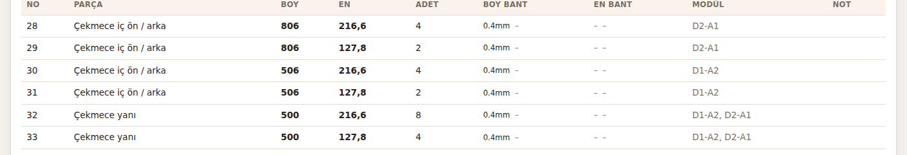
Damar
ahşap desende parça döndürülmez
Verim %
her plaka ve malzeme için
DC Mobilya Üretim · Plaka optimizasyonu
Yerleşim MaxRects yöntemiyle yapılır: büyük parçalar önce yerleştirilir, her parça en az boşluk bırakan yere konur. Çizimdeki numaralar kesim listesindeki parça numaralarıdır. Plaka ölçüleri malzemeden gelir: suntalam 3660 × 1830, MDFlam 2800 × 2100 gibi. Fiyatlandırmada alınan tam plaka sayısı kullanılır. Testere payı ve kenar tıraşı ayarlardan değiştirilebilir.
Ayarlar ve kütüphane yönetimi
Atölyenin kendi kuralları, kendi fiyatları
Firma: logo, adres, IBAN, teklif şartları, geçerlilik süresiÜretim: gövde birleşimi, arkalık, boşluklar, ray payları, ayak yüksekliğiFiyat: tabloda tek tek, toplu % zam ya da Excel'den yüklemeYedek: tek dosyada bütün işler, müşteriler, fiyatlar
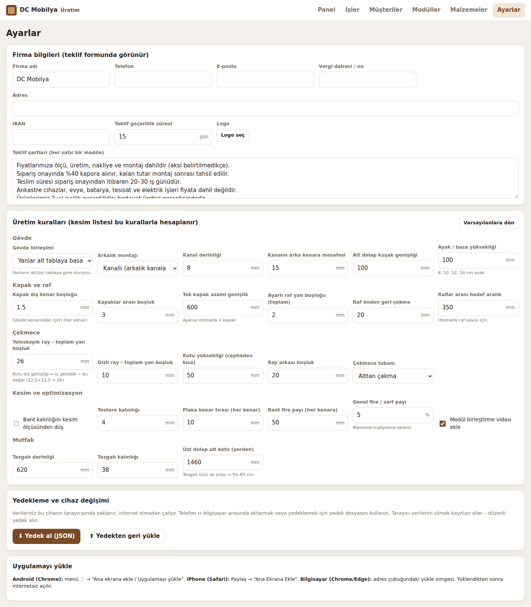
DC Mobilya Üretim · Ayarlar
Fiyat güncelleme yöntemi: Malzemeler ekranında "Excel'e aktar" ile tüm liste indirilir, fiyat sütunu güncellenir, "Excel/CSV'den yükle" ile geri alınır; eşleşme kod ya da id ile yapılır. Toplu zam grup bazında (örneğin sadece menteşeler %8) ya da bütün kütüphaneye uygulanabilir. Otomatik hesapta kullanılan bağlantı elemanları silinemez, yalnızca fiyatları değişir. Yeni malzeme eklenebilir, kullanılmayan malzeme pasife alınabilir.
Ölç. Teklif ver. Kes.
Müşterinin yanında fiyat, atölyede hatasız kesim listesi, hırdavatçıda eksiksiz malzeme.
Özet: uygulamanın vaadi bu üç fiildir. Ölçü müşteride alınır, teklif aynı anda verilir, sipariş onaylanınca kesim ve malzeme listesi hazırdır.
Başlarken
İlk teklife kadar beş adım
1
GitHub'da Settings → Pages → Source: GitHub Actions seçilir; uygulama yayına çıkar.
2
Adres açılır: emrullahkara.github.io/DC-Mobilya-uretim
3
Telefonda "Uygulamayı yükle" ya da iPhone'da "Ana Ekrana Ekle"
4
Ayarlar'da firma bilgisi ve logo; Malzemeler'de kendi alış fiyatlarınız
5
Panel'den "Mutfak Dolabı" : ilk teklif birkaç dakikada hazır
DC Mobilya Üretim · Başlarken
Birinci adım bir kez yapılır; sonrasında main dalına yapılan her güncelleme otomatik yayınlanır. Ayar seçildikten sonra ilk yayın için GitHub'da Actions sekmesinden "Test ve Yayınla" işi bir kez çalıştırılmalıdır. Fiyatlar örnek olduğu için ilk gerçek tekliften önce mutlaka güncellenmelidir. Kullanım kılavuzu ve bütün hesap kuralları depodaki KITAP.md dosyasındadır.
Sonraki adımlar · Öneri
Uygulamayı büyütecek dört geliştirme
Resimden desenli 3D
Dekor fotoğrafı yüklenir; ceviz, meşe, mermer desenleri 3D'de gerçek görünür.
Ortak veri
Birden fazla usta aynı işleri ve fiyat listesini anlık görür (sunucu gerekir).
Makine formatları
OptiCut, CutRite ve CNC programlarına doğrudan aktarım, etiket çıktısı.
Saha fotoğrafı
Ölçü sırasında duvar, tesisat ve priz fotoğrafları işe eklenir.
DC Mobilya Üretim · Yol haritası
Bunlar henüz uygulamada olmayan, önerilen geliştirmelerdir. Resimden desenli 3D ve saha fotoğrafı internetsiz çalışma yapısıyla uyumludur. Ortak veri ise bir sunucu ve barındırma maliyeti gerektirir; şu an cihazlar arası aktarım yedek dosyasıyla yapılır.
DC Mobilya Üretim
Teşekkürler
Uygulama
emrullahkara.github.io/DC-Mobilya-uretim
Kılavuz
KITAP.md · GitHub deposu
Kapanış. Sorular için: uygulamanın kullanım kılavuzu, hesap kuralları tablosu ve geliştirme günlüğü depodaki KITAP.md dosyasındadır.